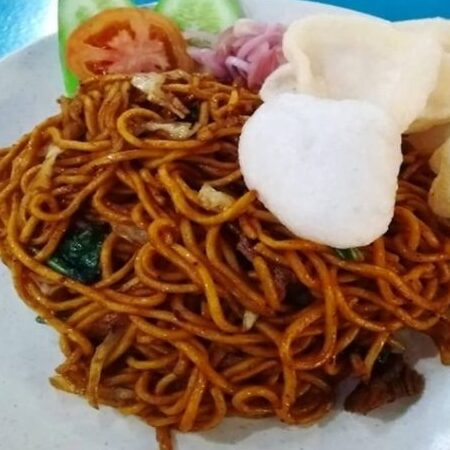

Makanan enak di Jakarta
Banyak orang Jakarta yang menjadikan wisata kuliner
sebagai pilihan untuk menghilangkan penat di tengah
sibuknya ibu kota ini. Menikmati makanan enak memang
tidak cuma bisa bikin perut kenyang, tapi juga bisa
meningkatkan mood kita semakin lebih baik. Kuliner
yang mantap pun tidak hanya selalu bisa didapetin di
dalam mall saja. Ada 5 area di Jakarta yang terkenal
banget sebagai surga makanan karena dipenuhi banyak
restoran-restoran ciamik. Ragam makanannya pun
sangat banyak, kamu bisa pilih yang sesuai dengan
selera dan tentunya budget kamu. Yuk langsung simak
5 surga kuliner di Jakarta yang wajib kamu datengin.

Makanan khas yogyakarta
Suka wisata kuliner? kamu wajib mencoba kuliner khas
Jogjakarta! Jogjakarta punya banyak makanan khas
yang lezat, lho! Yuk, simak daftarnya di artikel
ini! Jogjakarta merupakan kota yang kaya akan
budaya, keramahan, dan tentu saja kuliner khasnya.
Jogja memiliki banyak makanan khas yang unik dan
tentunya tak kalah nikmat yang wajib Toppers coba
jika berkunjung ke kota ini! Yuk simak daftar
kuliner khas Jogjakarta berikut ini!
Makanan khas Bali
Bali sebagai tempat wisata dilengkapi pula dengan
makanan khas yang bisa patut masuk daftar kulineran.
Kuliner Bali menggunakan bumbu khas Bali yang punya
cita rasa tersendiri.

Makanan khas Aceh
Indonesia dikenal dengan kekayaan budayanya yang
sangat beragam, demikian juga dengan kekayaan
kulinernya yang memiliki ciri khas di tiap
daerahnya. Salah satunya adalah menu makanan khas
Aceh yang terkenal dengan cita rasa rempah menggoda
dan menggugah selera. Cita rasa makanan khas aceh
banyak dipengaruhi oleh budaya Spanyol, India, Arab,
Belanda, Siam dan Cina. Namun, umumnya lebih
didominasi oleh cita rasa masakan Arab dan India.